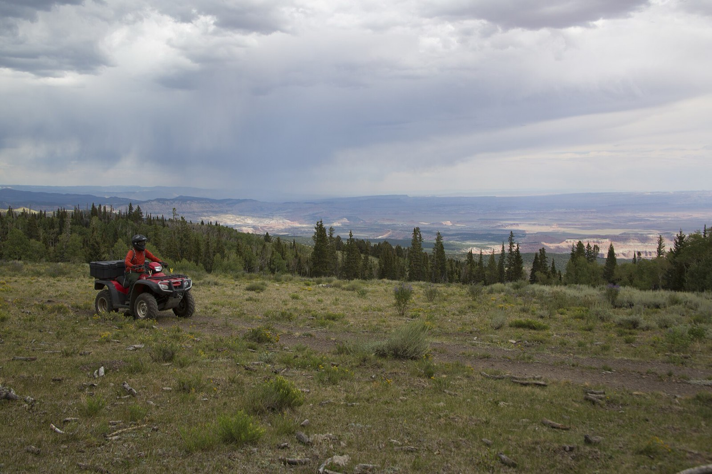

Rollover days
- The rollover. The side-by-side is on its lid and your buddy crawled out saying his neck is sore. Everybody wants to walk him to the shade — there’s a right way to move him, and it’s as one unit or not at all.
- Out from under. The machine came off his lower leg and the shin has a new shape under the pant leg. What you splint, what you keep re-checking, and why the second set of vitals matters more than the first.
- The ride-out temptation. You’ve got seats and he’s hurt. Loading a sore spine into a machine built for whoops is a decision, not a reflex — sometimes it’s right, and there’s a way to make the call.
Five lessons before the next ride-out
Ordered by what machines do to people:
- Patient Assessment — the head-to-toe that finds what the roll cage didn’t stop
- Spine & Helmets — rollover mechanism, plus the helmet doctrine done properly
- Musculoskeletal Injuries — splint it before anything rides anywhere
- Shock — the trend that tells you what the machine did inside
- Evacuation — machine-assisted evac as arithmetic, not adrenaline
Then pressure-test it
Interactive scenarios — one decision at a time, tempting mistakes included, debrief at the end:
- The Rider Down — a downed rider, a helmet question, a leg that needs a splint
- Don’t Sit Him Up — protecting a spine while you move it anyway
- The Guy Who’s Fine — the rollover victim who walks away — for now
The certification question, honestly. “Wilderness First Aid” isn’t a regulated credential. No government body defines what a WFA card means — it means whatever the company that printed it says it means. What counts in front of a patient is whether you can do the work. This course teaches the work, free, and issues a record of completion — not a certificate, and we won’t pretend otherwise. ASI and ROHVA rider courses teach you to keep the machine on its wheels — worth taking, and not medicine. If a ranch, employer, or outfitter wants a provider’s first aid card, take their class; you’ll show up fluent. If nobody requires you to hold a card, what you need are the skills, not the laminate.
What this is
Fifteen lessons, a 40-question knowledge check, sixteen practice scenarios, a printable field reference card, and a kit checklist. Free, no account, nothing recorded about you, source on GitHub. It teaches decision-making, not hands-on skill — practice the hands-on parts on a real, padded, complaining friend.
Other throttle-and-altitude people: overlanders & 4x4 off-roaders · snowmobilers & snowbikers · paragliders, hang gliders & PPG pilots